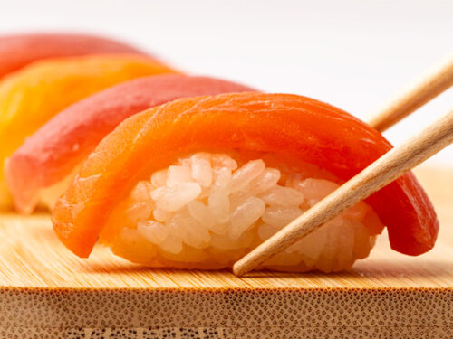
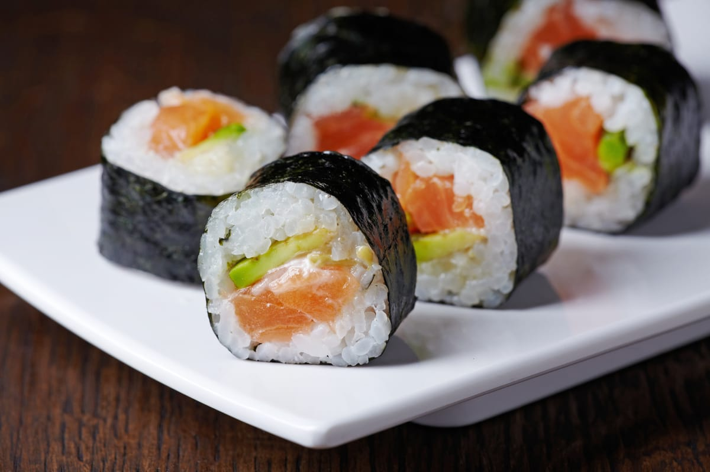
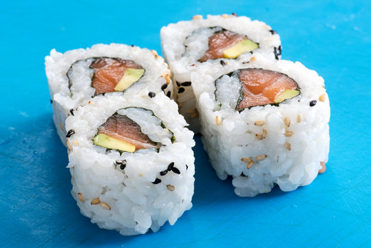
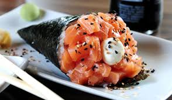
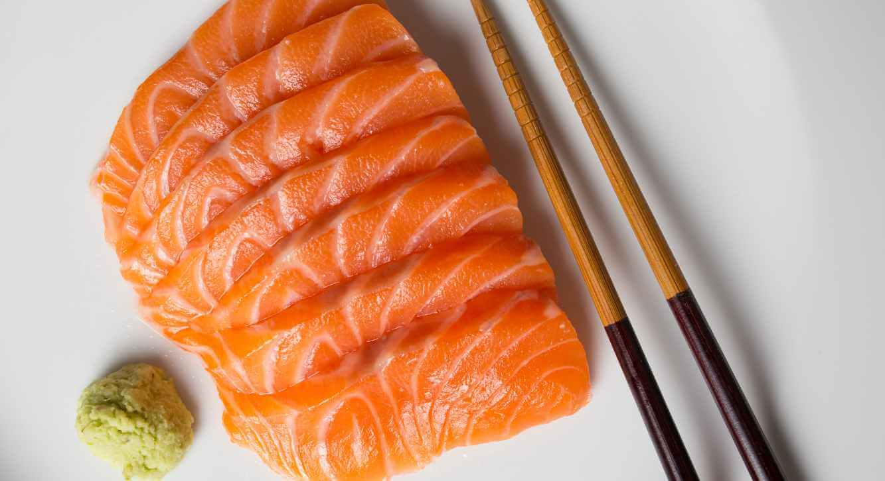
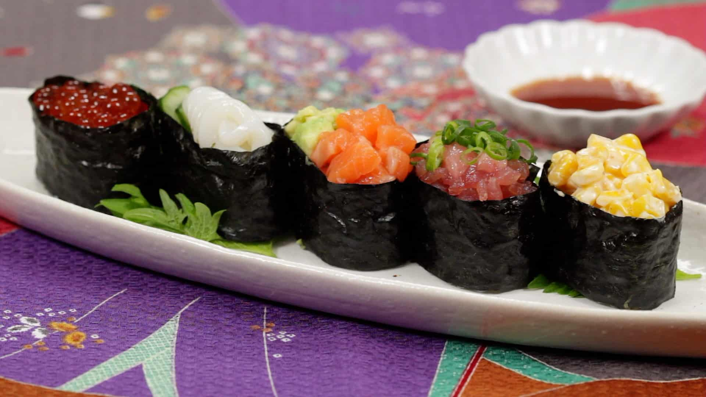
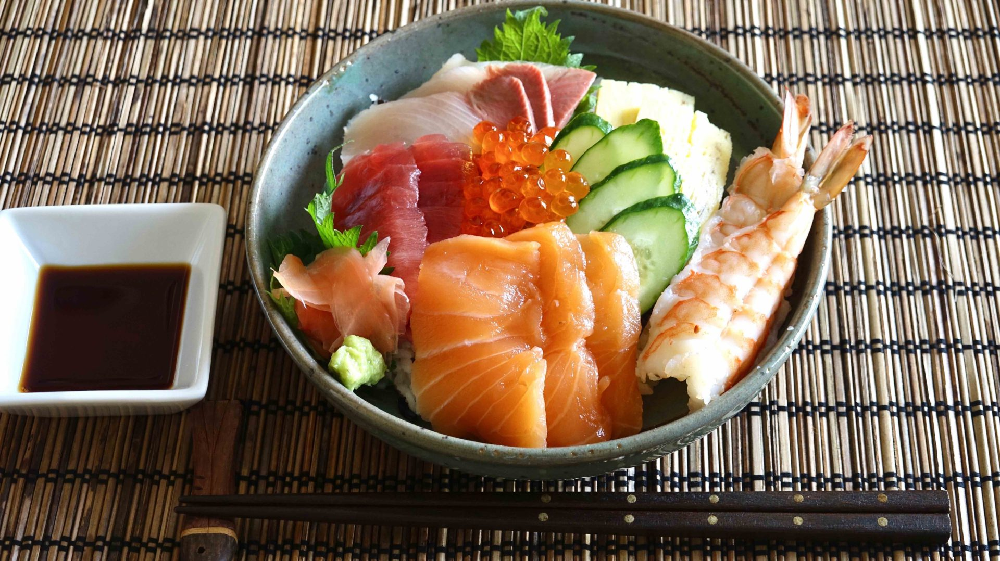
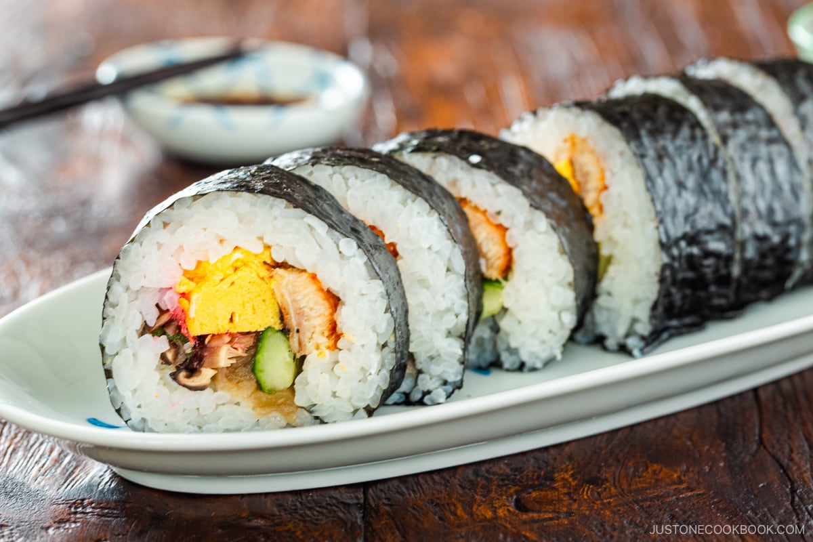

Niguiri

O Niguiri-zushi, um dos formatos mais tradicionais de sushi, surgiu no início do século XIX, em Edo (atual Tóquio), por volta de 1820, sendo criado pelo cozinheiro Hanaya Yohei. Essa invenção revolucionou a forma de consumir sushi, que antes era fermentado e levava dias para ficar pronto, transformando-o no clássico sushi rápido e prensado com arroz e um topo de peixe fresco que conhecemos hoje.
Como Preparar:
- Ingredientes
- 2 xícaras de chá de arroz próprio para comida japonesa
- 2 colheres de sopa de vinagre de arroz
- 500 g de salmão (preferencialmente partes do meio, para o pra ficar mais bonito)
- 3 xícaras de chá de água
- 2 colheres de chá de açúcar
- shoyu a gosto
- Lave o arroz e deixe escorrer, enquanto escorre, corte o salmão em pedaços de 2 à 3 cm de largura, lembrando que a espessura de cada pedaço deve ser de pelo menos 0,5 cm.
- Em uma panela, coloque o arroz e a água, leve ao fogo alto até levantar fervura, após ferver baixe o fogo e deixe cozinhar.
- Em um copo, coloque o vinagre e o açúcar e mexa até dissolver todo o açúcar.
- Solte o arroz em uma tigela e deixa esfriar, em seguida coloque a mistura de vinagre com açúcar.
- Com a ajuda de duas colheres faça bolinhos e solte-os num prato, coloque o filé de salmão sobre cada bolinho e decore com shoyu.
- Sirva acompanhado de um saquê de sua preferência.
Maki

O Maki Sushi, também conhecido como Makizushi ou "sushi enrolado", surgiu no período Edo (século XVII-XIX) no Japão, especialmente em Edo (atual Tóquio), como uma forma de "fast-food" para as ruas movimentadas. A inovação fundamental foi o uso de folhas de nori (alga marinha) para enrolar o arroz e os ingredientes, tornando-o prático para o consumo. Os primeiros maki eram simples, com peixe cru ou vegetais em conserva, mas a culinária regional do Japão com diferentes recheios e tamanhos, como os hosomaki estreitos de Kanto e os futomaki recheados de Kansai.
Como Preparar:
- Ingredientes
- 2 xícaras de arroz de sushi cru (arroz branco de grão curto)
- 2 xícaras de água
- ½ xícara de vinagre de sushi, receita abaixo
- 6 onças de salmão defumado, cortado em tiras
- 8 onças de cream cheese, cortadas no comprimento das folhas de nori e depois cortadas em tiras finas, de aproximadamente
- ½ pepino sem sementes, cortado no comprimento das folhas de nori e depois cortado em tiras finas
- 4 folhas de nori grandes, cortadas ao meio transversalmente
- Sementes de gergelim
- Prepare o arroz de sushi
- Prepare o rolo
- Enrole o maki
Lave o arroz em uma tigela com água corrente até que a água fique moderadamente transparente. Remova o excesso de amido da parte externa do arroz. Escorra completamente a água e coloque o arroz e duas xícaras de água emuma panela elétrica. Deixe descansar por pelo menos 15 minutos. Em seguida, cozinhe o arroz de acordo com as instruções da panela elétrica.
Coloque meia folha de nori sobre uma tábua de corte na horizontal, com o lado áspero voltado para cima. Com as mãos úmidas, espalhe o arroz de sushi uniformemente sobre a folha de nori. Levante a folha de nori. Molhe levemente a tábua de corte com água e coloque o arroz nori com o lado voltado para baixo sobre ela. Coloque uma tira de pepino, cream cheese e salmão defumado na folha de nori. Os ingredientes devem ser colocados na folha de nori e não o arroz!
Primeiro, enrole a esteira de bambu com filme plástico. Em seguida, molhe as mãos. Aproxime o nori do corpo e, em seguida, enrole delicadamente a folha de nori, formando um rolinho. Coloque a esteira de bambu sobre o rolo e modele delicadamente o rolo solto até formar um rolinho firme. Polvilhe o rolinho com sementes de gergelim torradas, se usar.
Urumaki

O Uramaki nasceu nos Estados Unidos, mais precisamente em Los Angeles, nas décadas de 1960 e 1970, e não no Japão. A sua criação foi uma adaptação para atrair o paladar ocidental, que não estava acostumado com o sabor ou a cor preta da alga nori na parte externa do rolo. Chefs americanos inovaram o sushi tradicional invertendo o processo: o arroz ficou por fora e a alga por dentro, tornando o sushi mais "amigável" e dando origem ao famoso California Roll
Como Preparar:
- Ingredientes
- 4 folhas de alga nori
- 1 xícara (chá) de arroz japonês (gohan) cozido de acordo com a embalagem
- 5 colheres (sopa) de gergelim preto
- 400g de salmão fresco em tiras
- Meia xícara (chá) de cream cheese
- Comece colocando a folha de alga nori em uma esteira de sushi, com o lado brilhante para baixo.
- Espalhe uma camada fina de arroz cozido sobre a alga, deixando cerca de 1 cm sem arroz na borda superior. Sobre ela, salpique o gergelim e vire a folha de alga, de modo que o arroz fique para baixo.
- Coloque o salmão e o cream cheese sobre a folha de alga.
- Com a ajuda da esteira, enrole a alga e o arroz em um cilindro e corte-o em 8 pedaços com uma faca bem afiada e molhada. Repita o processo até acabar com a alga e sirva frio.
Temaki

O temaki surgiu no Japão, durante o Período Edo (século XIX), como uma solução prática para o consumo rápido de sushi, em formato de charuto, sendo enrolado à mão com alga nori, arroz e outros recheios. O formato de cone, que conhecemos hoje, foi criado em 1924 para evitar que o molho shoyu respingasse. O temaki se tornou muito popular no Brasil devido à sua praticidade e ao seu recheio variado, e as temakerias brasileiras criaram versões maiores e com ingredientes diferentes dos tradicionais japoneses.
Como Preparar:
- Ingredientes
- 500 g de filé de salmão
- 5 folhas de nori (alga japonesa)
- 3/4 de xícara de arroz comum
- 3 xícaras de água
- 1 maço de cebolinha
- 1 tubinho de wasaby (raiz forte)
- 1 copo de cream cheese
- 1 vidro pequeno de molho shoyu
- Corte o filé de salmão em cubos pequenos. Adicione a cebolinha, já lavada e picada, ao salmão e reserve na geladeira enquanto prepara os outros ingredientes.
- Lave o arroz e deixe o cozinhar na água por cerca de 15 minutos (não precisa fritar e nem temperar), deverá ficar com uma consistência mais amolecida. Reserve e deixe-o esfriar.
- Com uma tesoura, corte as folhas de alga ao meio de modo que fiquem em forma de retângulo.
- Montagem do cone:
- Comece colocando a alga (que está retangular) em forma horizontal
- Com a mão limpa e molhada, pegue um punhado de arroz (que estará "papa") e espalhe na alga. Com uma faca passe o cream cheese em cima do arroz, acrescente o salmão picado e a cebolinha por cima.
- Enrolando o cone:
- Primeiramente lembre-se de deixar livres as margens da alga, sem recheio algum, para que possa ser enrolada e ficar em formato de um cone.
- Para conseguir o formato ideal, comece enrolando pela ponta inferior esquerda, em sentido diagonal para cima e para a direita. Ao final molhe os dedos em água e passe ao redor do cone para ele ficar colado.
- Misture em um recipiente pequeno o molho shoyu ao wasaby a gosto, cuidado para não ficar muito picante, e tempere seu cone como preferir.
Sashimi

A história do sashimi remonta ao Japão feudal, evoluindo de peixe fermentado ou em conserva para um prato refinado de peixe cru fatiado, que se tornou independente no período Edo (1603-1868). A palavra "sashimi" significa "carne perfurada", referindo-se à técnica ikejime de perfurar o cérebro do peixe para preservar a frescura. Atualmente, é uma iguaria mundialmente apreciada, embora o salmão, introduzido no Japão apenas mais recentemente, seja o peixe mais popular globalmente.
- Ingredientes
- 500 gramas de filé de tilápia
- 1 cenoura
- sal hinomoto
- shoyu
- 1 cebola grande
- 150 gramas de repolho (branco ou roxo)
- gengibre
- 3 limões (de preferência o limão rosa)
Como Preparar:
- Corte a cebola em rodelas finas e forre o fundo da tigela
- Com a ajuda de uma faca bem afiada, filete o filé de tilápia em tiras bem finas, sempre no sentido da fibra do peixe. cubra as cebolas com o peixe.
- Espalhe o sal hinomoto por cima do peixe, e esprema dois limões sobre o recipiente com o peixe e a cebola.
- Rale a cenoura em tiras fininhas e cubra o peixe, faça o mesmo com o repolho.
- Cubra todos os ingredientes com shoyu ( use uma porção generosa dele).
- Por fim rale o gengibre (em um ralador fino, use uma sacola plastica no ralador pra não Espalhar fios no ralo) e salpique a gosto o gengibre sobre o prato com o peixe.
- Sirva em recipientes pequenos, misturando tudo, acrescentando mais limão, shoyu e gengibre ao gosto.
Gunkan

O Gunkan é um tipo de sushi criado em 1941 no restaurante Kyubey, em Tóquio, com o objetivo de servir ingredientes que não ficariam no lugar em sushis tradicionais. A alga nori cria uma "parede" ao redor do arroz, formando um "navio de guerra" (gunkan) que segura recheios como ovas, salmão picado ou até mesmo vegetais.
Como Preparar:
- Ingredientes
- Molho Su
- 200 ml de vinagre e de arroz
- 100 g de açúcar
- 20 g de sal
- Shari (arroz japonês temperado)
- 200 g de arroz tipo japonês (grão curto)
- 200 ml de água filtrada
- Gunkan
- 12 a 15 gramas de ovas de salmão (ikura)
- Shari, quanto preferir
- 1 fatia de alga marinha (nori)
- Molho Su
- Junte todos os ingredientes e esquente no fogo até dissolver tudo
- Shari
- Lave o arroz de 2 a 3 vezes em água corrente e deixe escorrer.
- Coloque em uma panela o arroz e a água e deixe cozinhar.
- Depois de cozido, deixe o arroz descansar por 30 minutos no total.
- Ainda com o arroz quente, jogue o molho Su e misture soltando todos os grãos. Deixe esfriar.
- Gunkan
- Modele uma bolinha de arroz de sushi temperado (shari) de aproximadamente 15 gramas.
- Corte uma tira de alga marinha (nori) deixando-a com aproximadamente 2 cm de largura e 12 cm de comprimento.
- Enrole o nori no shari até formar um copinho.
- Dentro, adicione as ovas de salmão.
- Se quiser, sirva acompanhado de wasabi ou de um molho Shoyu de sua preferência
Oshi Sushi (Oshi Zushi)

A palavra "oshi" em "Oshi Sushi" refere-se ao oshizushi, um tipo de sushi prensado tradicionalmente de Osaka, Japão, conhecido por ser uma das formas mais antigas desta iguaria. Essa técnica consiste em prensar os ingredientes numa caixa de madeira chamada oshibako, resultando num sushi com uma forma retangular e densa. A história do oshizushi está ligada aos métodos ancestrais de conservação de peixe, onde o arroz fermentado com sal era usado para embalar e preservar o peixe, e o arroz era eventualmente incorporado à receita.
Como Preparar:
- Ingredientes:
- Ingredientes (para caixa oshibako com 4 cortes)
- 1 filé de toro (parte da barriga do atum branco)
- 1 concha de shoyu (molho de soja)
- 1 concha de saquê mirin (saquê culinário)
- 200 g de arroz para sushi (veja a receita)
- gergelim torrado (opcional e quantidade a gosto)
- Ingredientes para o molho
- 1 espinha de peixe branco (linguado, pargo ou robalo)
- 1 litro de shoyu (molho de soja)
- 2 kg de açúcar
- Preaparação do molho
- Asse a espinha do peixe;
- Cozinhe a espinha para tirar o caldo;
- Coe o caldo em outra panela e acrescente dois terços do shoyu e do açúcar. Deixe no fogo até ferver;
- Depois de fervido, abaixe o fogo e acrescente o restante do shoyu e do açúcar e deixe ferver em fogo baixo até que o molho fique com a consistência semelhante ao mel;
- Depois deixe esfriando até que fique com em temperatura média, pouco acima de morno e coe novamente (reserve).
- Preaparação do oshizushi
- Em uma bacia, misture o shoyu e o saquê. Deixe o filé de toro no molho por 30 minutos;
- Depois, em uma chapa ou frigideira antiaderente, coloque meia colher (sobremesa) de óleo de soja e asse o filé dos dois lados até dourar (reserve);
- Prepare um banho-maria e deixe o filé por 30 minutos para completar o cozimento;
- Retire o filé e coloque em uma tábua limpa. Corte o filé em fatias com 0,5 cm de espessura. O corte deve ser feito perpendicularmente;
- Coloque a metade das fatias do peixe no oshibako e, sem seguida, adicione meia camada de arroz;
- Polvilhe o arroz com gergelim torrado. Depois, coloque o restante do peixe e complete com o arroz;
- Coloque a tampa do oshibako e aperte levemente para pressionar o arroz. Deixe por 10 minutos para que o arroz fique concentrado;
- Nas cavidades da caixa, passe uma faca afiada entre elas, cortando ao meio, na vertical. Depois faça mais quatro cortes na horizontal para formar 10 pedaços ou, se preferir pedaços maiores e tradicionais, não corte na vertical para formar cinco unidades;
- Com cuidado, tire o oshizushi da caixa com o peixe virado para cima, empurrando a tampa para baixo à medida que a caixa vai subindo, o que fará com que o oshizushi fique livre e apoiado somente no fundo da caixa. Para tirar a tampa, que por vezes fica agarrada ao peixe, passe a faca, com o fio ao contrário, como se estivesse raspando a tampa;
- Depois, separe “delicadamente” os pedaços e os coloque em um belo prato. Cubra com o molho em quantidade a gosto.
Chirashi

A história do chirashi sushi, um prato de arroz avinagrado com ingredientes "espalhados" por cima, tem várias origens, incluindo a prática de escondê-los para driblar a austeridade alimentar durante o período Edo (1603-1868) e o surgimento em restaurantes de Tóquio no início do século XX para aproveitar pedaços de peixe que sobravam do preparo de nigiri sushi. O nome "chirashi" significa "espalhado" ou "disperso" em japonês, descrevendo a apresentação do prato.
Como Preparar:
- Ingredientes:
- Ingredientes para o Chirashi
- 4 xícaras de arroz branco japonês cozido
- 3 colheres de sopa de vinagre de arroz
- 2 colheres de sopa e meia de açúcar
- 1 colher de chá e meia de sal
- 1/4 de colher de chá de sal a gosto
- 2 ovos inteiros
- 1 gema
- óleo a gosto
- 200g de camarão cozido e descascado
- 200g de raiz de lótus cozida
- 100g de ervilha fresca cozida (em água e sal)
- 50g de ovas de salmão
- Ingredientes para a cobertura
- 200 g de camarão cozido e descascado
- 200 g de raiz de lótus cozida
- 100 g de ervilha fresca cozida (em água e sal)
- 50 g de ovas de salmão
- Coloque os ingredientes do tempero em uma xícara, misture e leve ao micro-ondas até o açúcar derreter. Despeje-o sobre o arroz cozido, ainda quente, e misture bem.
- Misture os ingredientes da omelete e passe num coador.
- Unte uma frigideira antiaderente com óleo e, quando estiver quente, despeje uma porção da mistura coada.
- Espalhe cuidadosamente até formar uma omelete fininha e tire do fogo antes de corar.
- Quando todas estiverem assadas, corte bem fino em tirinhas.
- Divida o arroz em quatro tigelas.
- Cubra-o com os ovos e enfeite com as ervilhas cozidas, os camarões, as ovas de salmão e a raiz de lótus.
Futomaki

O Futomaki, que significa "rolinho grande", surgiu no Japão durante o período Edo (1603-1868) como uma evolução do maki sushi, um tipo de sushi enrolado mais simples. É caracterizado por um diâmetro maior e o recheio com múltiplos ingredientes coloridos, como vegetais, tamagoyaki (omelete japonesa) e, por vezes, peixes cozidos, que simbolizam harmonia e equilíbrio.
Como Preparar:
- Ingredientes:
- 300 g de arroz (shari) temperado com vinagre próprio para sushi
- 1 folha de nori (alga marinha desidratada)
- Cebolinha a gosto
- Cream cheese a gosto
- Atum, salmão e kani a gosto
- Tezu (50% vinagre e 50% água)
- Makisu (esteira para enrolar sushi)
- Coloque uma folha de nori sobre a esteira; a parte brilhosa para baixo.
- Molhe um pouco os dedos no tezu e espalhe uma camada de aproximadamente um centímetro de shari por toda a extensão do nori, deixando livres somente as extremidades superiores e a inferior para que possa colá-las ao fim.
- Crie uma linha generosa de cream cheese.
- Adicione a fatia de atum, o kani e a fatia de salmão, então, recheie lado a lado no sentido horizontal para que, depois de cortado, as cores de cada alimento estejam visíveis.
- Finalize com cebolinha a gosto.
- Pegue a parte inferior da esteira, a mais próxima da sua barriga, empurre para frente e para cima. Umedeça um pouco da parte superior da alga livre de arroz e termine de enrolar bem. Dê uma apertada suave.
- Deixe descansar por 2 minutos antes de cortar cada rolo com um centímetro de largura cada.
- Sirva os rolinhos em um prato com shoyu à parte
Vamos conversar?
Conte o que achou do conteúdo ou deixe sua sugestão.